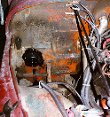
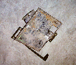

{kind=link}
 I have a dual battery tray, so for me it was easier to remove the
tray to get access to the hoses and wires going to the heater. If
you have a stock tray, you might be able to leave it.
I have a dual battery tray, so for me it was easier to remove the
tray to get access to the hoses and wires going to the heater. If
you have a stock tray, you might be able to leave it.
The Chevy Blazer heater motor upgrade for Jeep CJs and Wranglers has been bouncing around the net for as long as I can remember. It is remarkably easy and it greatly increases the air flow through the heating system. When my heater core began leaking like a sieve, I figured it was a good time to do the upgrade.
This upgrade works for '78–'86 CJs as well as '87–'90 Wranglers. Some of the CJs built in 1977 used the old-style heater housing with the heater motor behind the dash. I haven't heard of anyone doing this upgrade with the old style heater housing or with a Wrangler built after 1990. Any 1977 CJ with a heater motor sticking out of the fire wall will be able to do this upgrade.
Since I was able to buy the motor brand new at my local auto parts store for only $22, I decided not to search the junkyards for a used one. It takes a fair amount of time to install the motor, so I didn't want to install one on its last legs or waste a couple of hours at the local u-pull-it to save $17.
If you go to your local discount auto parts store, it is best not to confuse them with the truth. Ask them for a heater motor for a '73 Chevy Blazer with a 350 and air conditioning. The part is the same for all Blazers of that year regardless of engine size or air conditioning, but this is the normal stream of questions.
If you go to the junkyard for a motor, the heater motor you are looking for was used over several years in several different models. I don't have a complete part cross-reference, but any motor out of a Chevy pickup, GM pickup, Blazer, or Jimmy should work from '71 to '76. The motor may have the part number "1312" on it.
The only thing tricky about doing the upgrade is you will have to enlarge the opening in the fire wall to 3 1/4" to accommodate the larger diameter motor. An air cut-off wheel, drill with a hole saw, saber saw, or hack saw could be used to do the job. Other than that, the tools in most peoples tool box and anyone capable of changing their oil should be able to do the upgrade.
Start by draining at least 1/4 of the coolant from your radiator. It might be a good time to put in some fresh coolant. If so, check with local laws on how to properly dispose of your coolant. Do not pour it in a storm sewer. For most animals, drinking coolant causes kidney failure, not a pleasant way to go. Be sure to "burp" the system when you refill the coolant.
I have a dual battery tray, so for me it was easier to remove the
tray to get access to the hoses and wires going to the heater. If
you have a stock tray, you might be able to leave it.
Disconnect the two hoses on the engine side of the fire wall that go into the heater core. There should be a wire nearby that plugs into your current heater motor, unplug it. Also remove the curved drain hose that drains the bottom of the heater. You may also need to remove the hose that drains the grill on the cowl.
 I removed all the bolts from my dash and pulled it out a bit to get
easier access to my heater housing. It is
possible to remove the heater without removing the dash, but it makes
it easier to see what you are doing and you don't have to contort
yourself under the dash to remove cables and wires.
I removed all the bolts from my dash and pulled it out a bit to get
easier access to my heater housing. It is
possible to remove the heater without removing the dash, but it makes
it easier to see what you are doing and you don't have to contort
yourself under the dash to remove cables and wires.
Next, you need to unhook all the ventilation control cables and wires that attach to the heater housing behind the dash. Also disconnect the defroster duct hose at the top of heater housing.
Remove the four nuts that secure the heater housing on the engine side of the firewall. Three of them are pretty obvious near the heater hoses and heater motor, the other is near the middle of the fire wall behind the valve cover on my 258.
After the nuts are removed, you are ready to wrestle your heater
housing out.
 When you get the heater housing on the garage floor, remove the
screws from the back of the housing that hold the housing together.
There was caulking around the cover, so it took some gentle prying
to pull it apart.
When you get the heater housing on the garage floor, remove the
screws from the back of the housing that hold the housing together.
There was caulking around the cover, so it took some gentle prying
to pull it apart.
Remove the old motor and take the fan off of it and install the fan on your new motor. The new motor should be installed with no modifications on the heater housing. You might want to bench test the motor at this time to make sure it works and the fan is attached properly.
Now it is time to enlarge the hole in your fire wall to make room for the new motor. I opted to make an octagon shaped hole with an air cut off wheel. The hole is not as clean, but it took me no time to do. I originally planned on using a 3 1/4" hole saw, but this would have required removing the front fender to get my drill in there. The hole saw would also require me to attach a sheet metal plate to the fire wall so the pilot bit could hold the hole saw in place. A saber saw would work well, but it would also most likely require removing the front fender. A metal hand saw, other than a bow type hack saw, would probably work to enlarge the hole. Rod Gramlich wrote up the procedure he used to enlarge the hole with a hole saw. Other people have reported using a die grinder from the inside.
Once the hole is enlarged, it is time to put everything back together. Before you get everything back together, you might want to test the motor, or at least bench test it. Don't start your Jeep without coolant.
 The seal from my original heater motor didn't go around the new motor, so I sealed it with some black silicon RTV. Some people report they have been able to reuse the seal.
My heater motor had a large vent hole on the side that I covered with some duct tape to keep mud and water out. I have heard that not all the motors have this hole. Some motors come with a metal retaining clip to secure the motor from the outside, remove this clip.
 The larger heater motor interfered with my dual battery tray, so I had to cut a notch out of the tray to give the motor clearance. It may hang a little lower than the stock battery tray. I cut the notch with a circular hand saw with a metal cutting blade.
{kind=link}
{kind=link}